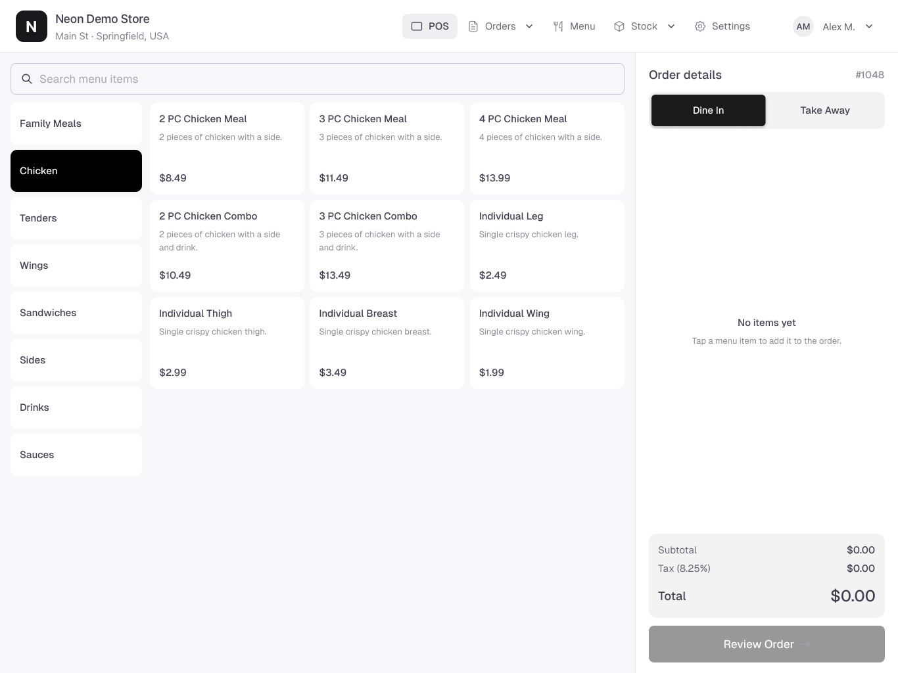

Neon Ordering
Product Designer & Product Manager
Restaurant ordering platform for quick-service chains, designed from research to release by one designer who also ran the product.

Summary
Neon Ordering is a restaurant ordering platform built for quick-service chains: a self-order kiosk for guests, a cashier app for staff, and a menu manager and integrations for the people who run the stores. I was the only designer and also the product manager, and I took it from competitor research to three releases in our first client’s stores — a US burger chain whose combos nest up to five levels deep. The POS owns the menu, the payment terminal runs on its own connection, and the client can’t hold unpaid orders — so every surface was designed around what the POS syncs and what happens when something fails.
- I took modifiers from a single level to nested groups up to five levels deep, with defaults that fill whole chains and clear rules for what happens when a guest changes a choice.
- I designed every error flow around one rule — the guest always knows whether they were charged — across terminal, printer and POS outages.
- I built an inherit-then-override model for menus, items and taxes, so restaurants manage one catalog across locations and channels while POS-synced fields stay locked.
Role and responsibilities
Neon Ordering connects four surfaces to the restaurant’s POS and delivery apps, so a menu built once can be ordered from a kiosk, rung up at the counter, and sent to the kitchen and to delivery partners.
As the only designer and the product manager, I owned the product from research to release: I ran the research, wrote the requirements, designed every surface, and handed off to the development team release by release.
- Research
- Teardowns of leading ordering and POS products, and a study of how a POS models menus, items and modifier groups.
- Product management
- Scope and roadmap with stakeholders, PRDs and tickets with acceptance criteria, and release planning with the dev team.
- Self-order kiosk
- Guest ordering flow, nested modifiers, upsells, payment, error and offline states, and an accessibility reach mode.
- Menu manager
- Catalog, menus and items with inheritance and overrides, modifier groups and pricing, taxes and kiosk banners.
- Cashier app
- Quick order, modifiers and payment at the counter, an orders feed for delivery apps, and store settings.
- Integrations & devices
- POS connection and location mapping, delivery channels, kiosk pairing and device management.
- Developer direction
- Handover docs with before/after changes, behaviour rules, QA checklists and open questions.
Design challenge
Build one platform that works for a guest ordering alone at a 24-inch kiosk, a cashier serving a queue at the counter, and an admin managing menus across locations — while the POS owns the data, and any part of the chain can fail mid-order.
- Deeply nested combos
- The client’s combos nest up to five levels deep — burger, side, drink, size, flavour — with thousands of possible choices in a single combo.
- Shared modifier groups
- The same groups, like sizes and toppings, are reused across dozens of items and had to behave the same everywhere.
- POS-owned fields
- Prices, locations, channels and availability can come from the POS, so the admin had to show what’s synced and what’s editable.
- More than one POS
- We started with one POS and others follow, so the model couldn’t be tied to a single provider.
- No unpaid orders
- The client can’t hold unpaid orders, so “save it and pay later” was never an option.
- Independent hardware
- The payment terminal and the printer run on their own, so either can fail while the kiosk keeps working.
- Speed at the counter
- Cashiers serve a queue — every extra tap, scan or popup costs time.
- Reach on a tall kiosk
- On a portrait kiosk, much of the screen sits above a seated guest’s reach.
How these shaped the work. These challenges drove four foundational decisions: drill-in modifiers with defaults and clear rules for changing a choice, an inherit-then-override model where a field only locks when the POS syncs it, error flows built around the charge status, and a dense, text-first cashier app with one control per job.
Process
Research first, then decide what not to build — every open question went on the research board, and stakeholders answered it right next to the question.
- Competitor research
Teardowns of leading ordering and POS products: importing, building and editing menus, 86’ing items, multi-menus and reports.
- POS data model
How a POS structures menus, groups, items, modifier groups and modifiers — the base for our own model.
- Open questions
Answered by stakeholders on the board: “Needed” · “Won’t do now” · “One POS first, others later”.
- Scope
Must-haves vs later phases — read-only menu sync first, write-back later.
- Explore options
Alternatives side by side, with a recommendation and the trade-offs.
- Audit
Gap, copy and consistency audits of my own flows before handoff.
- Hand-off
Handover docs, behaviour rules and tickets with acceptance criteria.
- Release & feedback
Feedback from the client’s stores shapes the next release.
It’s a continuous loop: feedback from the stores and the dev team goes straight back onto the research board and into the next release.
Key decisions
- Block ordering, don’t save it
- When the payment terminal is down, the kiosk stops taking orders at the start screen instead of letting a guest build a bag they can’t pay for.
- Always say if they were charged
- Every error tells the guest whether they were charged and gives them a way out — “order at the counter”, never “pay at the counter”.
- A loader that never fakes progress
- A payment wait has no known end, so the loader loops; the celebration only plays on a real approval.
- A kiosk isn’t a phone
- I rejected mobile ordering patterns and took touch targets from about 24px to 50–60px and body text to 17–18px.
- Lock only what the POS syncs
- The POS name is a variable and a field only locks when the connected POS actually owns it, so the product isn’t tied to one provider.
- One control per job
- At the counter: radio to pick one, checkbox to pick several, a stepper for repeatable add-ons — and no item photos, so more fits on screen.
Outcomes
The kiosk is live in our first client’s stores after three releases, and feedback from those stores drove the second and third. The cashier app, delivery integrations and accessibility mode are designed and next in line.
- Self-order kiosk
Live in stores, with a configurable order flow, guest information and upsells.
- Nested modifiers
Combos up to five levels deep, with defaults and rules for changing a choice.
- Error handling
Terminal, printer and POS outages that always tell the guest where they stand.
- Menu manager
One catalog across menus, locations and channels, with overrides and POS-synced fields.
- Taxes
Create a rate once, then inherit it or override it per menu or item.
- Cashier app
A dense, text-first quick order with required choices and payment.
- Integrations
POS location mapping and delivery channels with pause, busy mode and recovery.
- Accessibility
A reach mode that keeps every control within ADA forward-reach range.
Use cases
US burger chain
Our first client runs the kiosk in its stores, with the menu synced from its POS. Its combos nest up to five levels deep, so nested modifiers, defaults and readable kitchen tickets were built around its menu. When a store reported combo items printing with only their size on kitchen tickets, I traced it to the modifier naming, set up the workaround and filed the fix.
Gas-station chicken franchise
The anchor client for the cashier app and the kiosk’s Order Only mode: small stores, one cashier and a short menu of combos and sauces. Their real menu drove the cashier redesign — text-first tiles, required choices counted down, and repeatable sauces with a stepper.
Cashier app
Screens from the cashier app used at the counter. Scroll sideways, or click one to enlarge it.